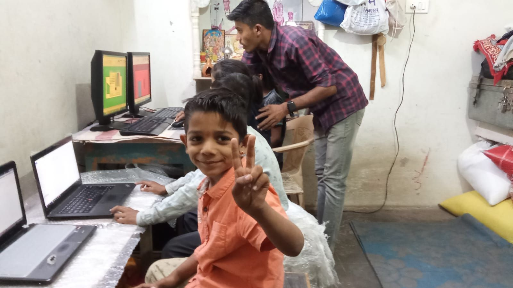

What this enables
Students get structured time on computers, practical digital exposure, and support from mentors on the ground. This complements in-person learning circles and helps build confidence.
Centres launched: 2
AI tutor introduced: Shikshak
Next step: understand how students interact with it, and what they actually need.
